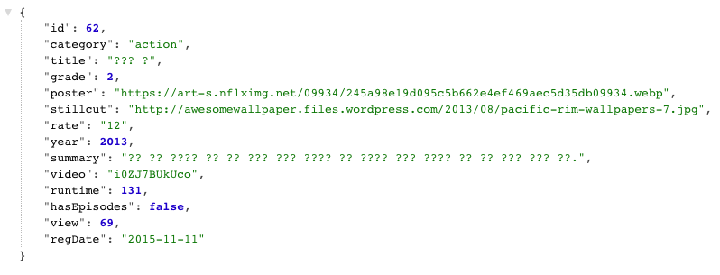
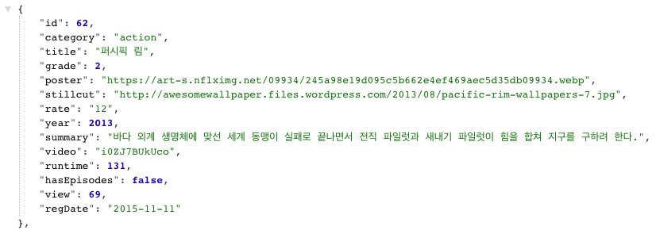

Kubernetes에 구성한 MariaDB(Mysql)의 한글 깨짐 현상 해결방법

Why?
Kubernetes(a.k.a. K8S)에서 Mysql 또는 Mariadb 이미지를 사용해서 컨테이너를 구성할 때 initialize된 Data에 한글이 깨지는 현상이 발생하는 경우가 있습니다.
구글에서 “mysql 한글 깨짐”이라고 검색만 해도 같은 문제를 호소하는 분들이 많고, 이를 해결하기 위한 다양한 해결 방법을 가이드하고 있습니다.
하지만 Docker 또는 Kubernetes 환경에서는 대부분이 이미 업로드된 official 이미지를 사용해서 컨테이너를 구성하기 때문에 이를 처리하는데 약간의 수고로움 존재합니다.
이번 세션에서는 K8S 환경에서 mysql(mariadb) 을 구성할 때 한글 깨짐 증상을 해결하고 더 나아가 설정을 자유롭게 할 수 있는 내용을 적어보았습니다.
한글 깨짐 현상
먼저 mariadb를 이용해서 DB를 배포해보도록 하겠습니다.
아래 설정은 Kubernetes환경으로 배포하기 위한 yaml 파일입니다.
apiVersion: v1
kind: Service
metadata:
name: mariadb
spec:
selector:
app: mariadb
ports:
- name: mariadb
port: 3306
targetPort: 3306
---
apiVersion: apps/v1beta2
kind: Deployment # 1.9 version 이상에서는 stable된 StatefulSet사용을 권장
metadata:
name: mariadb-deployment
labels:
app: mariadb
spec:
replicas: 1
selector:
matchLabels:
app: mariadb
template:
metadata:
labels:
app: mariadb
spec:
containers:
- name: mariadb
env:
- name: MYSQL_ROOT_PASSWORD # root계정의 패스워드
value: root
- name: MYSQL_DATABASE # 구성할 database명
value: database
- name: MYSQL_USER # database에 권한이 있는 user
value: user
- name: MYSQL_PASSWORD # database에 권한이 있는 user의 패스워드
value: password
image: mariadb
imagePullPolicy: IfNotPresent # 이미지를 pull받는 규칙을 지정(Always / IfNotPresent / Never)
ports:
- containerPort: 3306
restartPolicy: Always
status: {}작성된 위 파일을 가지고 Kubernets 환경으로 배포해보겠습니다.
$ kubectl apply -f mariadb.yaml
service "mariadb" created
deployment.apps "mariadb-deployment" created생성된 DB에 테이블을 생성하고 데이터를 집어넣습니다.
CREATE TABLE `contents` (
`id` int NOT NULL AUTO_INCREMENT,
`category` varchar(255) DEFAULT NULL,
`grade` double NOT NULL,
`has_episodes` bit(1) NOT NULL,
`poster` varchar(255) DEFAULT NULL,
`rate` varchar(255) DEFAULT NULL,
`reg_date` varchar(255) DEFAULT NULL,
`runtime` int(11) NOT NULL,
`stillcut` varchar(255) DEFAULT NULL,
`summary` varchar(255) DEFAULT NULL,
`title` varchar(255) DEFAULT NULL,
`video` varchar(255) DEFAULT NULL,
`view` int(11) NOT NULL,
`year` int(11) NOT NULL,
PRIMARY KEY (`id`)
);
INSERT INTO `contents` (`id`, `category`, `grade`, `has_episodes`, `poster`, `rate`, `reg_date`, `runtime`, `stillcut`, `summary`, `title`, `video`, `view`, `year`)
VALUES
('62','action',2,b'0','https://art-s.nflximg.net/09934/245a98e19d095c5b662e4ef469aec5d35db09934.webp','12','2015-11-11',131,'http://awesomewallpaper.files.wordpress.com/2013/08/pacific-rim-wallpapers-7.jpg','바다 외계 생명체에 맞선 세계 동맹이 실패로 끝나면서 전직 파일럿과 새내기 파일럿이 힘을 합쳐 지구를 구하려 한다.','퍼시픽 림','i0ZJ7BUkUco',69,2013);위 데이터에는 한글이 포함되어 있습니다.
하지만 위 같은 설정으로는 한글을 사용할 수 없습니다. (한글을 세계 표준으로…)
API호출 결과

위는 사용될 title, summary 컬럼에서 한글이 깨져있는 현상입니다.
해당 데이터베이스의 현재 character를 살펴 보겠습니다.
MariaDB [(none)]> show variables like 'c%';
+--------------------------+----------------------------+
| Variable_name | Value |
+--------------------------+----------------------------+
| character_set_client | latin1 |
| character_set_connection | latin1 |
| character_set_database | latin1 |
| character_set_filesystem | binary |
| character_set_results | latin1 |
| character_set_server | latin1 |
| character_set_system | utf8 |
| character_sets_dir | /usr/share/mysql/charsets/ |
| check_constraint_checks | ON |
| collation_connection | latin1_swedish_ci |
| collation_database | latin1_swedish_ci |
| collation_server | latin1_swedish_ci |
| completion_type | NO_CHAIN |
| concurrent_insert | ALWAYS |
| connect_timeout | 5 |
+--------------------------+----------------------------+한글 깨짐 현상은 mysql(mariadb)의 공식 이미지의 디폴트 언어 값이 latin1으로 되어있기 때문에 발생하는 증상입니다.
그. 래. 서!
Docker Hub에 존재하는 mariadb 이미지에 들어가봤습니다. (https://hub.docker.com/_/mariadb/)
어떤 설정을 해야된다라는 내용이 Docker 관점으로 영어로 써있습니다.
그 중에서 아래와 같은 내용이 있습니다.
Configuration without a cnf file
Many configuration options can be passed as flags to
mysqld. This will give you the flexibility to customize the container without needing acnffile.For example, if you want to change the default encoding and collation for all tables to use UTF-8 (
utf8mb4) just run the following:$ docker run --name some-mariadb -e MYSQL_ROOT_PASSWORD=my-secret-pw -d mariadb:tag --character-set-server=utf8mb4 --collation-server=utf8mb4_unicode_ciIf you would like to see a complete list of available options, just run:
$ docker run -it --rm mariadb:tag --verbose --help
docker run을 실행할 때 argument 값으로 UTF-8을 설정할 수 있다라는 내용입니다. 이것을 Kubernetes에서 설정을 넣어야하는데 설정이 익숙하지 않으신 분들은 어디에 넣어야할 지 모르실 수 있습니다.
그 설정은 다음과 같습니다.
kubernetes 환경에서 DB구성에 대한 샘플 yaml파일
apiVersion: v1
kind: Service
metadata:
name: mariadb
spec:
selector:
app: mariadb
ports:
- name: mariadb
port: 3306
targetPort: 3306
---
apiVersion: apps/v1beta2
kind: Deployment
metadata:
name: mariadb-deployment
labels:
app: mariadb
spec:
replicas: 1
selector:
matchLabels:
app: mariadb
template:
metadata:
labels:
app: mariadb
spec:
containers:
- name: mariadb
env:
- name: MYSQL_ROOT_PASSWORD
value: root
- name: MYSQL_DATABASE
value: database
- name: MYSQL_USER
value: user
- name: MYSQL_PASSWORD
value: password
image: mariadb
imagePullPolicy: IfNotPresent
args:
- "--character-set-server=utf8mb4" # default Character Set 을 지정하는 argument
- "--collation-server=utf8mb4_unicode_ci" # 문자열 비교 규칙 _ci(case insensitive) / _cs(case sensitive) / _bin(binary)
ports:
- containerPort: 3306
restartPolicy: Always
status: {}위와 같은 설정을 넣어주면 해당되는 mysqld 명령으로 argument를 설정하는 것에 포함되는 부분입니다.
설정이 잘 되어있는지 확인해보겠습니다.
MariaDB [(none)]> show variables like 'c%';
+--------------------------+----------------------------+
| Variable_name | Value |
+--------------------------+----------------------------+
| character_set_client | latin1 |
| character_set_connection | latin1 |
| character_set_database | utf8mb4 |
| character_set_filesystem | binary |
| character_set_results | latin1 |
| character_set_server | utf8mb4 |
| character_set_system | utf8 |
| character_sets_dir | /usr/share/mysql/charsets/ |
| check_constraint_checks | ON |
| collation_connection | latin1_swedish_ci |
| collation_database | utf8mb4_unicode_ci |
| collation_server | utf8mb4_unicode_ci |
| completion_type | NO_CHAIN |
| concurrent_insert | ALWAYS |
| connect_timeout | 5 |
+--------------------------+----------------------------+잘 되었네요!!
실제 데이터를 넣어서 확인해본 결과는 다음과 같습니다.

다음시간에는 mariadb 전체 설정을 바꿀 수 있는 my.cnf 파일을 작성해서 Kubernetes 환경으로 배포하는 세션을 다루어보도록 하겠습니다.